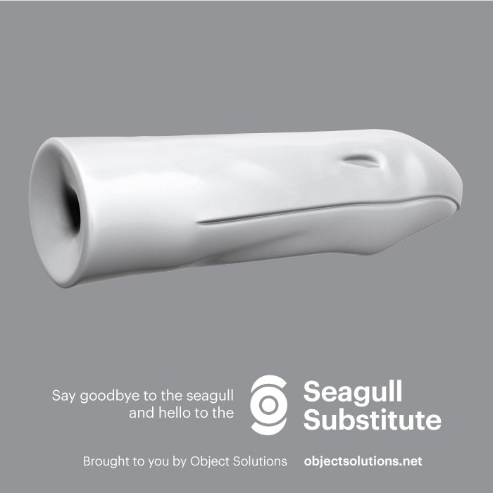
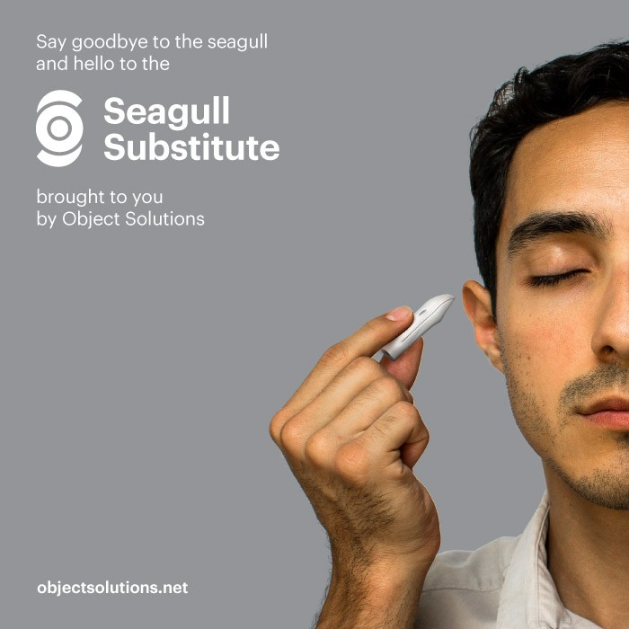

Support Object Solutions
The new Object Solutions Shop features our flagship invention, the Full-Body Moist Towel. Your purchase directly funds our future projects, including more films, more prototypes and an upcoming book.
Problem Solved
Put a new spin on the meaningless squawk of seagulls at the shore. The Seagull Substitute turns this unintellible noise into a digestible sonic experience.
How It Works
The implant, shaped like the birds’ beaks, is inserted firmly into the ear. Sensitive algorithms perceive the squawks from a distance and impede them from reaching your auditory canal. In their place, you receive an ongoing media package, based on your selected mode. 
Symphony Mode
Listen to free-form orchestral productions as the seagulls become classical instruments. Play the role of conductor by engaging personally with the birds, and allow them to engulf you in song.
Historical Mode
Allow the seagulls to guide you through Portland’s rich history as their calls become a whirlwind of facts, spoken in the voices of important figures. Gaze left or right to give the overview a political spin.
Narrative Mode
Join the conversation as the birds become characters in an unfolding drama. The seagulls are imbued with irresistible personalities whose entanglements will bring you back for more, day after day.
Created for Citydrift/Portland
The Seagull Substitute was advertised on the streets of Portland, Maine, as a project for citydrift/Portland. Our laboratorians also addressed another Portland problem: the faux vintage aesthetic of new structures in the city. Read the full story and see photos of the campaign. 